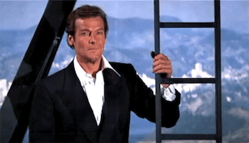
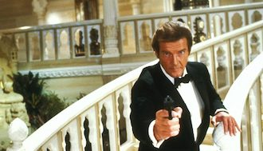
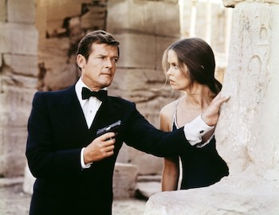

Roger Moore, the longest-serving hero in the longest-lasting movie series of all-time, has passed away at the age of 89. In memory of the actor best known for his roles in the James Bond franchise—from Live and Let Die (1973) to A View to a Kill (1985)—and who spent much of his later years doing charity work with UNICEF, for which he was knighted in 2003, Maclean’s is republishing our interview with him from our 2012 James Bond special issue, tied to the release of his book, Bond on Bond.

MD – In the book, you mention that you’re “not necessarily an avid repeat viewer” of the Bond films. How would you describe your relationship with them these days?
RM – I see them all. I used to deny I’d seen them, because I didn’t want to be asked, “What was your opinion?” and I might say, “Oh, I didn’t like it,” but it would be treated as, “He’s got a dose of sour grapes about other Bonds.” But curiosity always makes me want to see it. And also because I know so much about them—I guess it’s just looking at other people doing your job, and you think, “My God—they’re all better than I was!”
When you were hired as Bond, the studio had your hair cut, and they made it into a photo op. Was there something anti-hippie about the Bond franchise in the early ’70s?
Well, certainly Bond was never a hippie! I’d just finished a series—The Persuaders! with Tony Curtis—in which I dressed in slightly hippie fashion. The beginning of the ’70s, you know—miniskirted ladies and men with flared trousers. We were all very flashily dressed, and so I had to become rather sober for Bond, and of course I had to take off some weight, because I’d led rather a good life doing The Persuaders! Whenever we opened champagne on the set, it was real. I think I put on about 20 or 30 lb. doing the filming.
Was it ever real champagne on the Bond sets?
Yeah, but you’d never get around to drinking it.

You write about how in the early days of the Bond franchise, “Fine living consisted of a night out at the pictures followed by a fish-and-chips supper,” and that “James Bond offered something exciting—something previously unimaginable.” In these times of austerity in Britain, does this kind of excitement become similarly important?
Ah, I really don’t know. There’s still good living [that] goes on. Everybody seems to live rather well down here in Monaco!
Are escape and the “unimaginable” still important to the Bond films?
Well, I’m absolutely confident that Skyfall, the new Bond film, will be a big, big hit, because every Bond film is an event. Fathers take their sons to it; probably grandfathers. It’s been a long time, and I think that the success of Bond is because the audiences have never been cheated by the producers. They always spend every penny, put it on the screen, and then the things that people expect to see in a Bond film—big action scenes, glamorous ladies—it’s pure escapism.

There seems to be so much bureaucracy in Britain, and Bond fights his way past it.
Well, yeah, the bureaucracy probably drove him mad, and particularly with Q always going to great lengths to explain everything, and sort of, “Yes, yes, I know that, Q.” Q getting very cross with him: “007, be careful of my equipment!” He wrecks every car, wrecks everything that comes in sight.
Did you ever wish that you could act like Bond—march around and do your own thing?
You’re absolutely right. I agree with you.
Do you have a favourite Bond one-liner?
My wife had not seen the Bond films, and there was one on television the other week, The Man With the Golden Gun, which I hadn’t seen since the premiere, and I said, “There’s a wonderful line that comes up here.” I’m questioning a gunsmith, and there’s a rifle on a stand, and I lower the sights of the gun to his groin and say, “Speak now or forever hold your piece.” It must have been the American version that was being shown: “Oh my God! That line was supposed to be there; it’s gone.” The Bible belt—you never know.
The promotional material of the book mentions that you are supposed to finally reveal your favourite Bond girl, and this turns out to be your wife—it’s not quite the answer most people would be expecting. What Bond-girl qualities does she exemplify?
Well, one of the reasons Sean got fed up with being Bond was that his wife was always called “Mrs. Bond,” and when [Moore and his wife would] be travelling for UNICEF abroad, quite often people were confused, and they’d say, “Mrs. Bond,” which was funny. But yes, it’s much easier, rather than upsetting some of the leading ladies, to say that she was my favourite. She’s beautiful, and I don’t think she would do really for Bond, but she does for Roger Moore.
Moonraker takes Ken Adam’s designs to an extreme and brings Bond to the most exotic location of all: space. Looking back, how do you feel about that film?
I personally didn’t like the idea of Bond in space. Having to fly around on a wire was not particularly comfortable, and I didn’t like the outfit. It had a terrible helmet. That was just a little—it’s not a pun—way out. What was good about Moonraker was that we had Jaws back, because after The Spy Who Loved Me, he became a well-loved villain. He was a great character—very simpatico with the audience. I liked the fact that he had evil teeth—dispose of people with one dent.
Which I gather were very hard to wear.
Oh God, poor Richard [Kiel]. He started to gag after about 30 seconds. You know when you get a piece of silver paper out of a bit of chocolate and it goes on a filling? Makes your nerves twitch? Well you can imagine what it’s like having all that tin in your mouth. Poor bugger.
You mention in the book that the key to your interpretation of the role is that you wouldn’t enjoy killing, but that you’d “do it professionally, quickly and accurately.” Why did you decide that would be your hallmark as James Bond?
Because at the beginning of one of the books—I can’t remember which—it said that Bond had just finished a mission in Mexico; he obviously has had to eliminate somebody, although he didn’t like killing. He took pride in doing his job efficiently. It resonated with me, because I am not violent myself. I hate guns, I hate explosions, so I thought it was a good key to this man. His job’s got to be done.
Did you see yourself as being unlike Sean Connery in that respect?
Absolutely. I always say, Sean was a killer; I was a lover.
You write about how you found the violence in A View to a Kill was a bit overdone.
It was a bit too much. So many people being shot and killed and falling all over the place. It was sort of destruction for destruction’s sake—although it was fun to drive around in a fire engine and all that in San Francisco.
How did you feel about finishing your Bond career with that particular film?
I figured I’d had enough, and the audience had had enough. I was beginning to feel that leading ladies were about the age of my granddaughter, and it started to look a bit like Gary Cooper in Love in the Afternoon.
Is the series still too violent, or has it redeemed itself?
Certainly with Daniel Craig it’s violent, but he’s so good and so real, it doesn’t really deter me; I’m just fascinated by the energy he has and the amount of work he puts on the screen.
What did you make of the Olympic Opening Ceremony film where he and the queen parachuted in?
You couldn’t think of a better promotion for a new Bond. And that’s a very expensive leading lady! I did a short promotion film for the 2012 Olympics back when they were making their bid. We did a scene outside MI6, on the embankment, and then we were invited in and treated to coffee and biscuits. The security is enormous. My God. You go through turnstiles and scanners, and you couldn’t walk in there thinking you were going to be able to blow the place up.

Might your role as James Bond have influenced some children to grow up and join MI6?
I think if I had an influence, it would be not to join MI6. That’s a dangerous job. In real life, I don’t think there’s that money flashing around. It must be terrible to be in that world—a world of darkness. In real life, I think the closest thing is The Spy Who Came in From the Cold, with Richard Burton. Bond is fantasy.
You’ve been knighted because of your services to charity and your work with UNICEF. How did your work as Bond open doors for you?
Being known for Bond, certainly when you’re in foreign countries, makes people curious. You get to see presidents because their wives were curious; their children were curious about Bond or The Saint or whatever. Then once you have your foot through the door, you can then let them see that you’re serious about what you’re talking about, and not just a twit. You know what the subject is, and you know that you’re pressing for children’s rights, and protection for mothers. It’s very useful to have done it, and I’m very grateful that I’ve been of some use over the last 20 years to UNICEF, which is a wonderful cause.